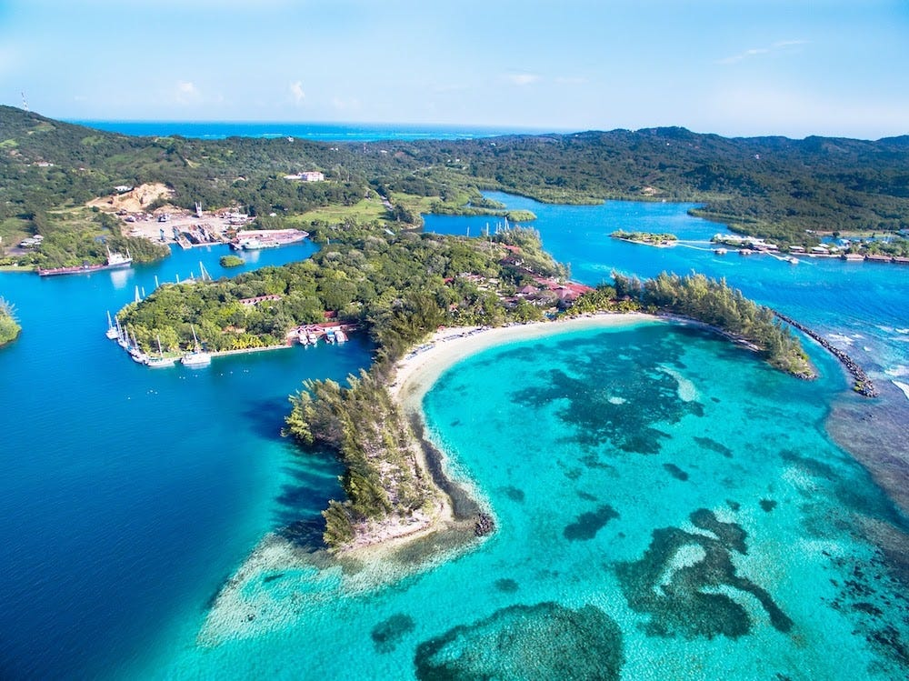
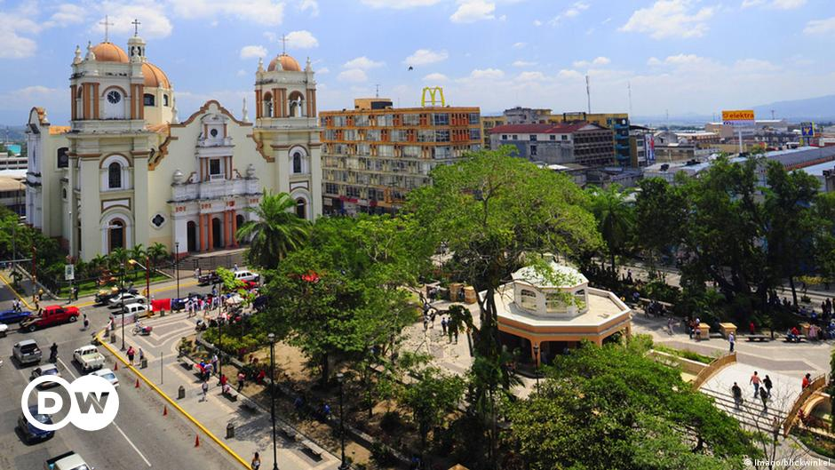

Lugares Turisticos
-
Roatan
 -
Cayos Cochinos
-
Ruinas Copán

Honduras es el segundo país más grande de la región. Se trata del país más montañoso de Centroamérica, con dos terceras partes del territorio por encima de los trescientos metros de altitud. La montaña más elevada del país es el Celaque, con una altura de 2.849 metros.
Las cinco estrellas azules simbolizan los cinco países que formaron la antigua Federación Centroamericana y el ideal de la unión de Centroamérica. La franja blanca significa la pureza, la integridad, la fe, la obediencia, la paz, la firmeza, la vigilancia, la bondad y la nación.
El escudo del escudo de armas significa Simboliza la libertad, el amor a la patria y la esperanza, virtudes por las cuales vivió y murió Lempira a manos de los conquistadores.
Honduras se independizó de España en 1821, pero en 1822 se unió con México y otras cuatro naciones, Costa Rica, El Salvador, Guatemala y Nicaragua. Sin embargo, las cinco naciones centroamericanas se separaron de México en 1823. Honduras finalmente se independizó por completo en 1839.
La República de Honduras se localiza geográficamente entre los 13° 33' 16'' de latitud norte y entre los 83° 8' 89'' de longitud oeste. Extensión total de 112,492 km2.